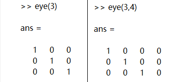

A linear transformation is a motion in a linear space, and a matrix is a tool to describe that transformation
In previous course about matrix， we know that we can derive a matrix through euqations. And matrix can also be regarded as a combination of matrix. Here we also give some examples and demostrations to help you review. The written representation can be:
To find combinations of those columns, multiply the matrix by a vector (c,d) :
Matrix representation of Matlab
1. Matrix elements must be in "[]";
2. The row elements of a matrix are separated by spaces or commas;
3. The rows of a matrix are separated by a semicolon or carriage return;
4. The elements of a matrix can be values, variables, expressions or functions;
5. The dimensions of the matrix don't need to be defined in advance.
Matlab Examples:
1. Direct input method
The easiest way to create a matrix is to define the elements of the matrix directly using the rules above.
2. Create a matrix using MATLAB functions:
The basic matrix function is as follows:
(1) ones() : generate a matrix with all ones ;
ones(m,n) : generate a matrix with all ones in m*n dimension;
(2) zeros() : generate a matrix with all zeros;
(3) eye() : generate the unit matrix;

(4) rand() : generate a random matrix uniformly distributed in the interval (0,1);
(5) randn() : generate standard normal distribution random matrix with mean value of 0 and variance of 1.